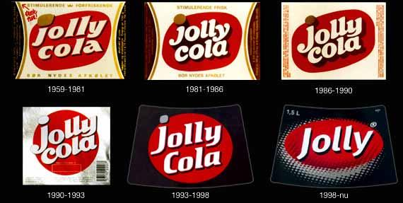

1959
Jolly Cola bliver lanceret den 1. juli i 1959 af Dansk Cola Drik, et fælles aktiv blandt 18 danske bryggerier og mineralvands-fabrikker.

Jolly Cola etiketter gennem tiderne.
Jolly Cola bliver lanceret den 1. juli i 1959 af Dansk Cola Drik, et fælles aktiv blandt 18 danske bryggerier og mineralvands-fabrikker.
Jolly Cola etiketter gennem tiderne.
Jolly Cola får produceret 30.000 metalskilte, som sættes op i hele Danmark. Man ansætter et antal mennesker, som skulle køre landet tyndt for at få skiltene op ved købmændene. Lønnen for denne opgave var 2 kr. pr. skilt.
Her begyndte man at lave de første reklamefilm om Jolly Cola, som siden blev vist i biograferne i 1961.
Som den første læskedrik i Danmark, kom Jolly Cola med etiketter, som var aftagelige. Det var den mest praktiske form for markedsføring af drikken, samt en nem måde at kommunikere ud til befolkningen på.
Musikquiz bag på en Jolly etikette.
Aftagelige etiketter.
Reklame fra 1975 med sloganet "Sig Jolly til din Cola."
Jolly Light kommer på markedet for første gang, men holder kun i ca. 2 år, før den bliver pillet af igen.
Reklamen med Tina Kjær vises for første gang. Senere i 2007 havde reklamen i Danmark 100 års jubilæum, og i denne forbindelse havde TV2 Danmark valgt at ville kåre den bedste reklame igennem 100 år. Vinderen som fik over 30% af stemmerne, var reklamen med Tina Kjær i “2 modne frugter”.
Jolly Cola udgør i 2003 kun 2% af markedet i Danmark. I september 2003 fik Bryggeriet Vestfyen endelig over halvdelen af aktierne i Jolly Colaen. Vestfyen relancerer Jolly Colaen i 2003.
Jolly Colaen udgør i starten af januar 2004 næsten 25% af Coop Danmarks salg af colaer efter den blev smidt ud i 1999.
Bryggeriet Vestfyen følgende produkter på gaden: Jolly Cola, Jolly Light, Jolly Time, Jolly Orange og Jolly Energy cola.
Jolly Cola fylder 50 år.
Bryggeriet lancerer nye produkter: Jolly Kildevand, Jolly Danskvand og Jolly Danskvand Citrus.
I 2014 Har bryggeriet Vestfyen startet en relancering af Jolly Cola’en, som nu går tilbage til 80’erne, såvel som etiketterne og sloganet “Sig Jolly til din cola”.
Jolly Cola skifter til flasker lavet af 100% genanvendelig plast!